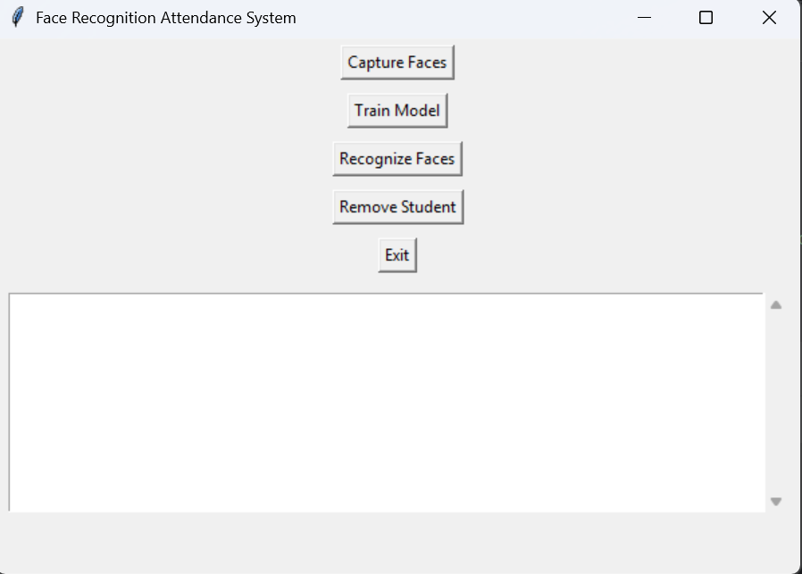

Face Recognition Attendance System
This project uses OpenCV and face recognition libraries in Python to automate attendance. The program detects and recognizes faces in real time and marks attendance by storing data in a CSV file.
Key Features:
- Live face detection and recognition using webcam
- Automatic attendance logging in CSV format
- Optimized with Object-Oriented Programming for easy scalability
- Clean and modular architecture

View Code on github